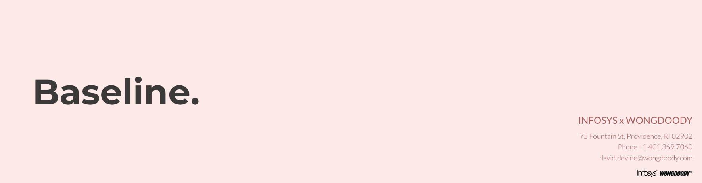

<!DOCTYPE html>
<html lang="en">
<head>
    <meta charset="UTF-8">
    <meta name="viewport" content="width=device-width, initial-scale=1, shrink-to-fit=no">
    <title>Baseline</title>
    <link rel="shortcut icon" type="image/png" href="#">
    <!--Bootstrap Goes Here-->
    <link rel="stylesheet" href="https://stackpath.bootstrapcdn.com/bootstrap/4.4.1/css/bootstrap.min.css" integrity="sha384-Vkoo8x4CGsO3+Hhxv8T/Q5PaXtkKtu6ug5TOeNV6gBiFeWPGFN9MuhOf23Q9Ifjh" crossorigin="anonymous">
    <!--Styling goes here-->
    <link rel="stylesheet" href="./asset/css/style.css">
</head>
<body>
    <!--Header & Nav Bar-->
    <div class="MainContainer">
    <header id="top">
        <nav class="navbar navbar-light">
          <a class="navbar-brand" href="#"></a>
        </nav>
        <!-- <div class="jumbotron jumbotron-fluid">
          <div class="container">
            <h1 class="display-4">Baseline</h1>
            <p class="lead">This is a modified jumbotron that occupies the entire horizontal space of its parent.</p>
          </div>
        </div> -->
      </header>
      <div class="mainBody">
        <!-- partial:index.partial.html -->
        <div class="skw-pages">
          <div class="skw-page skw-page-1 active">
            <div class="skw-page__half skw-page__half--left">
              <div class="skw-page__skewed">
                <div class="skw-page__content"></div>
              </div>
            </div>
            <div class="skw-page__half skw-page__half--right">
              <div class="skw-page__skewed">
                <div class="skw-page__content">
        <!--           <h2 class="skw-page__heading">Skewed One Page Scroll</h2>
                  <p class="skw-page__description">Just scroll down</p> -->
                </div>
              </div>
            </div>
          </div>
          <div class="skw-page skw-page-2">
            <div class="skw-page__half skw-page__half--left">
              <div class="skw-page__skewed">
                <div class="skw-page__content">
                </div>
              </div>
            </div>
            <div class="skw-page__half skw-page__half--right">
              <div class="skw-page__skewed">
                <div class="skw-page__content"></div>
              </div>
            </div>
          </div>
        </div>
            <div class="ParallaxContainer">

            </div>
          
            <div class="ContentContainer">
              <!-- <div class="Content"> -->
                  
                <div class="article-box">
                    <div class="row">
                        <div class="col-md-4">
                            <div class="placeholder"></div>
                        </div>
                        <div class="col-md-4">
                            <div class="placeholder"></div>
                        </div>
                        <div class="col-md-4">
                            <div class="placeholder"></div>
                        </div>
                    </div>
                </div>
               <!-- </div> -->
            </div>
          </div>
        </div>
    <footer>
        
    </footer>

    <!-- jQuery first, then Popper.js, then Bootstrap JS -->
    <script src="https://code.jquery.com/jquery-3.4.1.slim.min.js" integrity="sha384-J6qa4849blE2+poT4WnyKhv5vZF5SrPo0iEjwBvKU7imGFAV0wwj1yYfoRSJoZ+n" crossorigin="anonymous"></script>
    <script src="https://cdn.jsdelivr.net/npm/popper.js@1.16.0/dist/umd/popper.min.js" integrity="sha384-Q6E9RHvbIyZFJoft+2mJbHaEWldlvI9IOYy5n3zV9zzTtmI3UksdQRVvoxMfooAo" crossorigin="anonymous"></script>
    <script src="https://stackpath.bootstrapcdn.com/bootstrap/4.4.1/js/bootstrap.min.js" integrity="sha384-wfSDF2E50Y2D1uUdj0O3uMBJnjuUD4Ih7YwaYd1iqfktj0Uod8GCExl3Og8ifwB6" crossorigin="anonymous"></script>
    <!-- JavaScript -->
    <script src="./asset/js/script.js"></script>
</body>
</html>